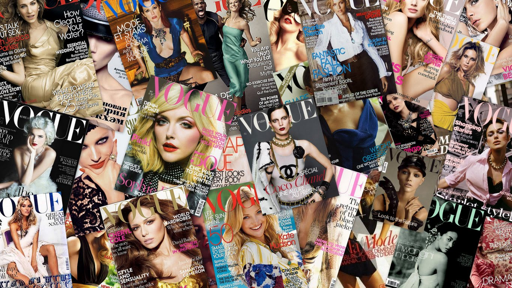
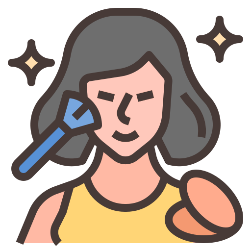

<!DOCTYPE html>
<html lang="pt-br">
<head>
<meta charset="UTF-8">
<meta name="description" content="Beleza Na Mídia!">
<meta name="author" content="Gabriel Andrade">
<meta name="viewport" content="width=device-width, initial-scale=1.0">
<link rel="icon" type="image/x-icon" href="Icon.png">
<link rel="stylesheet" href="styles.css">
<title>Home - Beleza e Mídia</title>
</head>
<body>
<h1>TRABALHO DE BELEZA E MÍDIA</h1>
<h2>Nome: Gabriel Andrade Justino; Serie: 3°D.</h2>
<ul>
<li><a href="video.html">Vídeo</a></li>
<li><a href="texto.html">Texto</a></li>
<li><a href="conclusao.html">Conclusão</a></li>
<li><a href="opensurce.html">Open Surce</a></li>
</ul>
<script src="script.js"></script>
</body>
</html>
<!DOCTYPE html>
<html lang="pt-br">
<head>
<meta charset="UTF-8">
<meta name="description" content="Beleza Na Mídia!">
<meta name="author" content="Gabriel Andrade">
<meta name="viewport" content="width=device-width, initial-scale=1.0">
<link rel="icon" type="image/x-icon" href="Icon.png">
<link rel="stylesheet" href="styles.css">
<title>Vídeo - Beleza e Mídia</title>
</head>
<body>
<div class="video-container">
<iframe id="youtube-frame" width="560" height="315" src="https://www.youtube.com/embed/GTiBuVb2nZ0?autoplay=1&fs=1" frameborder="0" allowfullscreen></iframe>
</div>
<button onclick="goToHome()" class="back-button">Voltar para a Home</button>
<script src="https://www.youtube.com/iframe_api"></script>
<script src="script.js"></script>
</body>
</html>
<!DOCTYPE html>
<html lang="pt-br">
<head>
<meta charset="UTF-8">
<meta name="description" content="Beleza Na Mídia!">
<meta name="author" content="Gabriel Andrade">
<meta name="viewport" content="width=device-width, initial-scale=1.0">
<link rel="icon" type="image/x-icon" href="Icon.png">
<link rel="stylesheet" href="styles.css">
<title>Texto - Beleza e Mídia</title>
</head>
<body>
<div class="note-style">
<h1>PADRÃO DE BELEZA INFLUENCIADO PELA MÍDIA</h1>
<p>
A busca pelo padrão de beleza tem sido uma longa jornada ao longo dos tempos e em diferentes culturas. Ao longo da história, a sociedade sempre buscou se enquadrar no ideal de aparência que consideram como perfeita. Sendo influenciados por muitos aspectos, incluindo tradições antigas e que também acompanham os avanços da tecnologia. Na atualidade, essa ideia de beleza é muito difundida e amplamente moldada pela mídia.
</p>
<p>
Ao longo dos anos, a beleza e seus padrões mudaram muito, refletindo o que as pessoas achavam importante em diferentes tempos. Na Grécia Antiga, valorizavam um corpo em boa forma e simetria. Durante a Renascença, preferiam um corpo mais cheio e curvilíneo, e hoje em dia, temos nossas próprias ideias de beleza.
</p>
<p>
Conforme o tempo passa, a mídia tem um papel cada vez mais importante em dizer o que é bonito. Antigamente, a fotografia, o cinema e a televisão desempenharam esse papel, e agora as redes sociais também são grandes influências. A mídia é como um meio que mostra o que é considerado 'certo' em termos de beleza.
</p>
<h1>INFLUÊNCIA DA MÍDIA NO PADRÃO DE BELEZA</h1>
<p>
A mídia de hoje tem um grande impacto na maneira como vemos o que é bonito. Revistas, TV, filmes e redes sociais espalham constantemente ideais de beleza de forma persuasiva por todo o mundo.
</p>
<p>
Usando imagens escolhidas com cuidado e apresentações ideais, a mídia nos fazem ver a aparência de uma certa maneira, nos fazendo querer ser 'perfeitos'. Isso cria uma pressão social, fazendo com que muitos tentem atingir uma imagem que muitas vezes é impossível.
</p>
<h1>MOTIVOS PELOS QUAIS A MÍDIA PROMOVE CERTOS PADRÕES DE BELEZA</h1>
<p>
A razão principal pela qual a mídia promove ideais de beleza é para ganhar dinheiro. A indústria da beleza, que inclui maquiagem, roupas e produtos similares, é muito lucrativa. Ao mostrar um certo padrão de beleza, a mídia faz com que as pessoas queiram comprar esses produtos, gerando mais lucros.
</p>
<p>
Também, os padrões de beleza muitas vezes seguem o que a sociedade valoriza. A mídia reflete e influencia o que é considerado atraente em uma determinada época ou sociedade, reforçando ideias já existentes e estereótipos.
</p>
<h1>ANÁLISE DAS CONSEQUÊNCIAS DESSE PADRÃO DE BELEZA NA SOCIEDADE</h1>
<p>
A constante promoção do 'padrão de beleza perfeito' causa grandes problemas na sociedade. Faz as pessoas se sentirem mal consigo mesmas, pode levar a distúrbios alimentares, ansiedade, e depressão, especialmente em jovens. Além disso, contribui para discriminação baseada na aparência e mantém um ciclo de insatisfação constante.
</p>
<p>
Essa busca constante pela perfeição pode levar a coisas perigosas, como fazer cirurgias plásticas em excesso ou seguir dietas muito restritivas. As pessoas fazem isso tentando alcançar um padrão de beleza que é impossível de atingir, mas que a mídia mostra como ideal.
</p>
<h1>REFLEXÃO SOBRE O PADRÃO DE BELEZA ATUAL</h1>
<p>
Quando olhamos de perto o padrão de beleza atual, surge uma pergunta: estamos progredindo para um padrão mais aberto? Em muitos aspectos, sim. Hoje, valorizamos a diversidade em formas, cores e tamanhos, o que amplia a ideia de beleza na sociedade atual.
</p>
<p>
No entanto, essa ampliação não é igual para todos. Mesmo que haja avanços, ainda há uma forte pressão para se ajustar a certos padrões de beleza, principalmente os que a mídia enfatiza.
</p>
<h1>MUDANÇAS E EVOLUÇÃO DO PADRÃO DE BELEZA AO LONGO DO TEMPO</h1>
<p>
O jeito de ser considerado bonito mudou muito ao longo dos séculos, acompanhando as mudanças sociais, culturais e tecnológicas. Desde a Renascença até hoje, vimos uma transformação marcante - de valorizar corpos mais cheios para buscar corpos extremamente magros.
</p>
<p>
Hoje em dia, há um esforço para mudar o que achamos bonito, valorizando a singularidade e aceitando mais tipos de beleza. No entanto, ainda precisamos trabalhar muito para desfazer ideias preconcebidas e aceitar uma variedade real de beleza.
</p>
</div>
<!-- Botão para voltar à Home -->
<button onclick="goToHome()" class="back-button">Voltar para a Home</button>
<script src="script.js"></script>
</body>
</html>
<!DOCTYPE html>
<html lang="pt-br">
<head>
<meta charset="UTF-8">
<meta name="description" content="Beleza Na Mídia!">
<meta name="author" content="Gabriel Andrade">
<meta name="viewport" content="width=device-width, initial-scale=1.0">
<link rel="icon" type="image/x-icon" href="Icon.png">
<link rel="stylesheet" href="styles.css">
<title>Conclusão - Beleza e Mídia</title>
</head>
<body>
<div class="note-style">
<h1>CONCLUSÃO</h1>
<p>
Vivemos em um mundo que desde sempre teve essa imposição do que é bonito ou não, imposta pela mídia de diferentes maneiras ao longo da época. Hoje em dia, o que mais nos influencia são as redes sociais. Essa exposição de um mundo e vida perfeitos impostos pelos influencers acaba deixando as pessoas iludidas a ponto de entrar em uma depressão profunda, distúrbios e inúmeras inseguranças. Mesmo com o avanço da não discriminação e a flexibilização desse PADRÃO, ainda sofremos muito por isso.
</div>
<!-- Botão para voltar à Home -->
<button onclick="goToHome()" class="back-button">Voltar para a Home</button>
<script src="script.js"></script>
</body>
</html>
function goToHome() {
window.location.href = 'index.html';
}
function onYouTubeIframeAPIReady() {
var player;
player = new YT.Player('youtube-frame', {
videoId: 'GTiBuVb2nZ0', // Substitua pelo ID real do vídeo
playerVars: {
'autoplay': 1, // Inicia a reprodução automaticamente
'controls': 1, // Exibe os controles do player
'showinfo': 0, // Oculta informações do vídeo
'rel': 0, // Oculta vídeos relacionados
},
events: {
'onReady': onPlayerReady,
}
});
}
function onPlayerReady(event) {
// Você pode executar ações quando o player estiver pronto, se necessário
}
body {
font-family: Arial, sans-serif;
text-align: center;
margin: 50px;
background-image: url('fundo.png'); /* Caminho para a imagem de fundo */
background-size: cover; /* Ajusta o tamanho da imagem de fundo para cobrir todo o corpo */
background-repeat: no-repeat; /* Evita a repetição da imagem de fundo */
background-attachment: fixed; /* Fixa a imagem de fundo para que ela não role com a página */
zoom: 90%; /* Define o zoom inicial para 150% */
}
/* Adiciona uma faixa de fundo atrás de h1 */
h1 {
background-color: rgba(0, 0, 0, 0.5); /* Cor de fundo semi-transparente (preto) */
padding: 10px; /* Espaçamento interno */
color: white; /* Cor do texto */
}
p {
background-color: rgba(255, 255, 255, 0.5); /* Cor de fundo semi-transparente (preto) */
padding: 10px; /* Espaçamento interno */
color: rgb(0, 0, 0); /* Cor do texto */
zoom: 150%; /* Define o zoom inicial para 150% */
}
/* Adiciona uma faixa de fundo atrás de h2 */
h2 {
background-color: rgba(0, 0, 0, 0.5); /* Cor de fundo semi-transparente (preto) */
padding: 10px; /* Espaçamento interno */
color: white; /* Cor do texto */
}
/* Ajusta as cores dos botões */
a {
text-decoration: none;
font-size: 18px;
padding: 10px 20px;
margin-top: 20px;
border: 2px solid #333; /* Borda sólida de 2px (cor mais escura) */
display: inline-block;
text-align: center;
background-color: #fff; /* Cor de fundo dos botões */
color: #333; /* Cor do texto dos botões */
}
a:hover {
background-color: #333; /* Cor de fundo ao passar o mouse */
color: #fff; /* Cor do texto ao passar o mouse */
}
/* Estilizações para o vídeo */
.video-container {
position: relative;
max-width: 800px;
margin: 0 auto;
zoom: 67%;
}
.video-player {
width: 100%;
}
/* Estilizações para o botão */
.back-button {
padding: 10px 20px;
font-size: 16px;
margin-top: 20px;
border: 2px solid #333;
display: inline-block;
text-align: center;
background-color: #fff;
color: #333;
cursor: pointer;
}
.back-button:hover {
background-color: #333;
color: #fff;
}
Imagem do fundo.
Imagem do icone.
